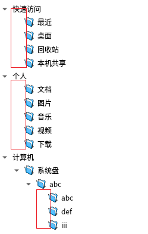
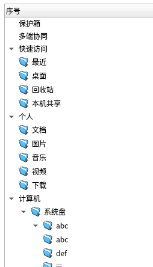

操作系统: 银河麒麟V10SP1
qt版本 : 5.12.12
测试同事提出,QTreeView显示的效果不符合设计图,样子太丑了,如下:

希望子项和父项对齐,设计图效果如下:

上面的图中就是原生Qt的效果,没有其他样式影响,说明Qt原本就是这个效果,所以我决定修改Qt源码
qtreeview.cpp 修改如下
void QTreeView::drawRow(QPainter *painter, const QStyleOptionViewItem &option,const QModelIndex &index) const
if (d->isTreePosition(headerSection)) { //下修改
-const int i = d->indentationForItem(d->current);
+int currentLevel = d->itemLevel(d->current);
+int indentDistance = d->indentationForItem(d->current);//先获取原本需要缩进的距离
+if(currentLevel >= 0 && !reverse){//目前处理从左到右显示的情况
+ if(index.column() == 0){//如果是treeview第一列的项
+ QModelIndex parent = index.parent();
+ if(!parent.isValid()){//没有父项
+ indentDistance = d->indentationForItem(d->current);
+ }else{//有父项
+ if(d->hasVisibleChildren(index)){//其子项可视
+ indentDistance = d->indentationForItem(d->current);
+ }else{//其子项不可视
+ //如果子项不可视,那么就和其父项缩进同样的距离
+ indentDistance = d->itemLevel(d->current)*d->indentValue();
+ }
+ }
+ }
+}
+const int i = indentDistance;//最终得到的缩进距离
void QTreeView::drawBranches //下修改
-QRect primitive(reverse ? rect.left() : rect.right() + 1, rect.top(), indent, rect.height());
+QRect primitive(reverse ? rect.left() : rect.right() + 2, rect.top(), indent, rect.height());
//增加新的方法
int QTreeViewPrivate::itemLevel(int item) const{
if (item < 0 || item >= viewItems.count()){//超出范围返回-1
return -1;
}
return viewItems.at(item).level;
}
//获取缩进距离
int QTreeViewPrivate::indentValue() const{
return indent;
}
//在qtreeview_p.h文件下增加函数声明
int itemLevel(int item) const;
int indentValue() const;